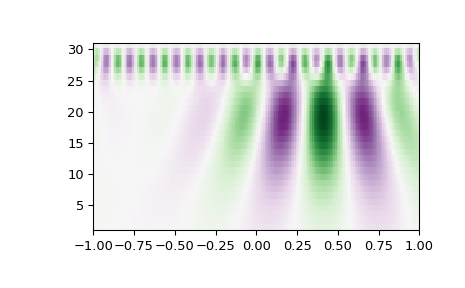

scipy.signal.cwt¶
-
scipy.signal.cwt(data, wavelet, widths, dtype=None, **kwargs)[source]¶ Continuous wavelet transform.
Performs a continuous wavelet transform on data, using the wavelet function. A CWT performs a convolution with data using the wavelet function, which is characterized by a width parameter and length parameter. The wavelet function is allowed to be complex.
- Parameters
- data(N,) ndarray
data on which to perform the transform.
- waveletfunction
Wavelet function, which should take 2 arguments. The first argument is the number of points that the returned vector will have (len(wavelet(length,width)) == length). The second is a width parameter, defining the size of the wavelet (e.g. standard deviation of a gaussian). See
ricker, which satisfies these requirements.- widths(M,) sequence
Widths to use for transform.
- dtypedata-type, optional
The desired data type of output. Defaults to
float64if the output of wavelet is real andcomplex128if it is complex.New in version 1.4.0.
- kwargs
Keyword arguments passed to wavelet function.
New in version 1.4.0.
- Returns
- cwt: (M, N) ndarray
Will have shape of (len(widths), len(data)).
Notes
New in version 1.4.0.
For non-symmetric, complex-valued wavelets, the input signal is convolved with the time-reversed complex-conjugate of the wavelet data [1].
length = min(10 * width[ii], len(data)) cwt[ii,:] = signal.convolve(data, np.conj(wavelet(length, width[ii], **kwargs))[::-1], mode='same')
References
- 1
S. Mallat, “A Wavelet Tour of Signal Processing (3rd Edition)”, Academic Press, 2009.
Examples
>>> from scipy import signal >>> import matplotlib.pyplot as plt >>> t = np.linspace(-1, 1, 200, endpoint=False) >>> sig = np.cos(2 * np.pi * 7 * t) + signal.gausspulse(t - 0.4, fc=2) >>> widths = np.arange(1, 31) >>> cwtmatr = signal.cwt(sig, signal.ricker, widths) >>> plt.imshow(cwtmatr, extent=[-1, 1, 1, 31], cmap='PRGn', aspect='auto', ... vmax=abs(cwtmatr).max(), vmin=-abs(cwtmatr).max()) >>> plt.show()
